Décoration
Tous les objets de décoration de la Maison An-Sophie Nélis présents dans le showroom sont à vendre et représentent un mélange entre luxe et artisanat.
Vous trouverez des tables en bois pétrifié qui apportent une touche rustique et luxueuse, des meubles de jardin sélectionnés avec soin, des écharpes et couvertures moelleuses aux couleurs chatoyantes fabriquées à la main en Espagne, par une société artisanale existant depuis 1930 confectionnées à partir de laine de qualité supérieure provenant de nos leurs propres brebis.
Le résultat est une gamme de produits uniques et magnifiques, qui offrent une chaleur et un confort inégalés.
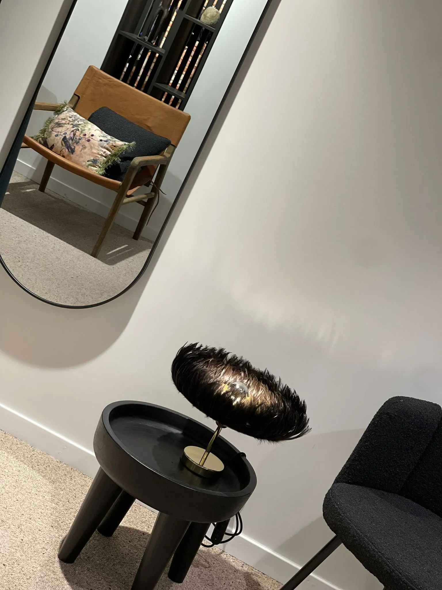
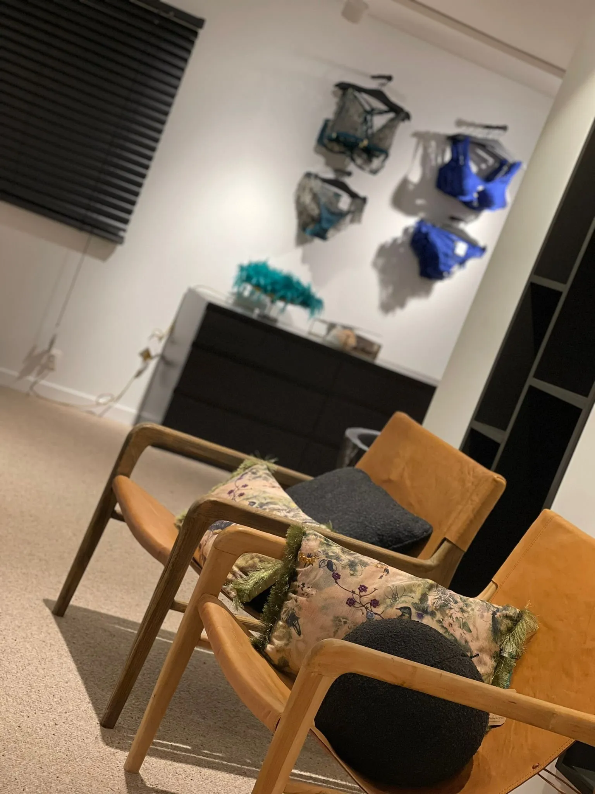
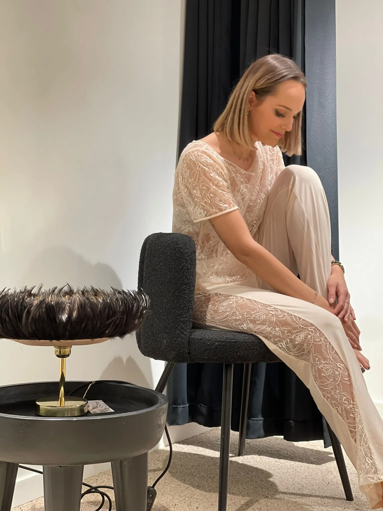
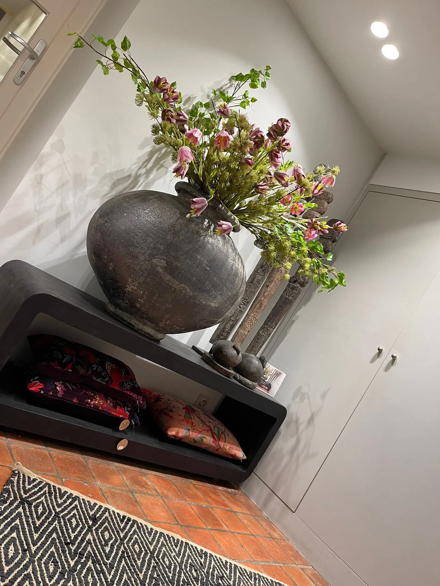
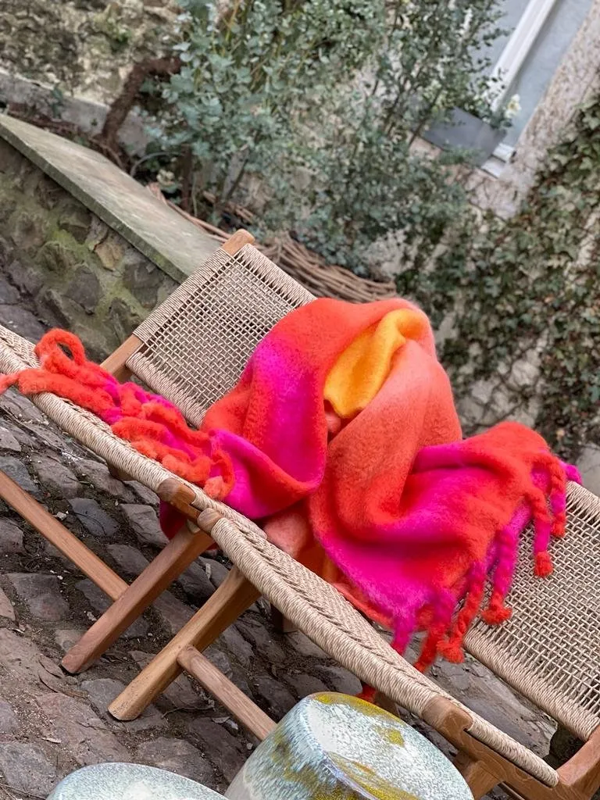
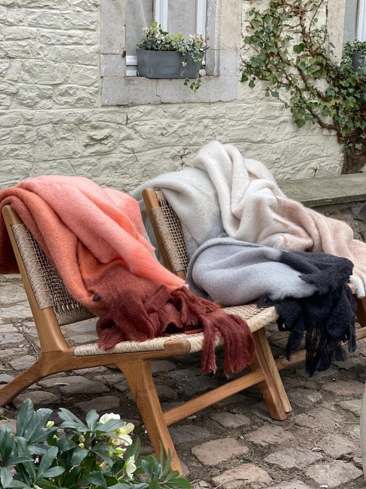
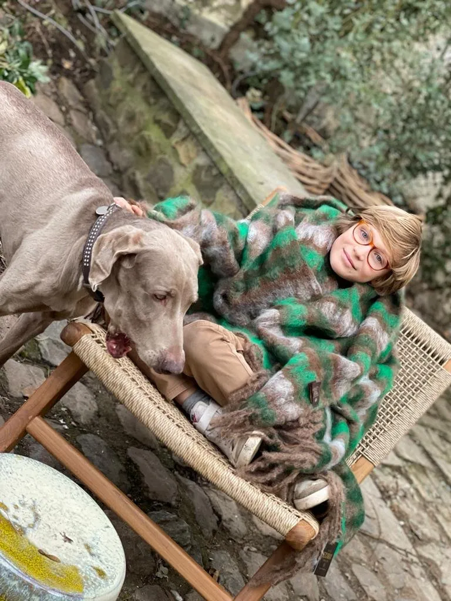
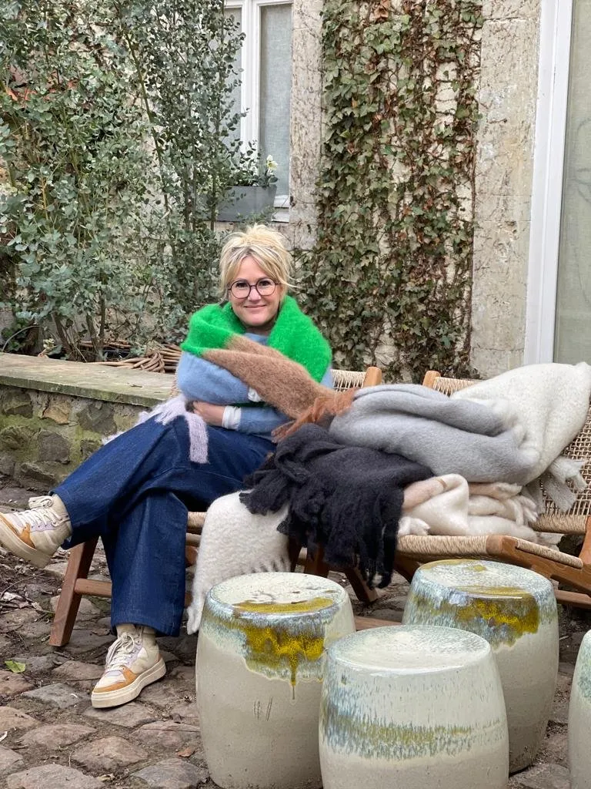
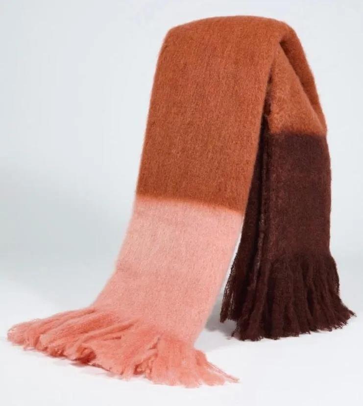
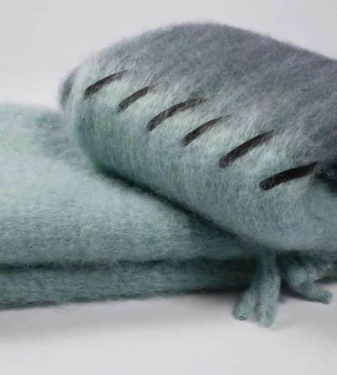
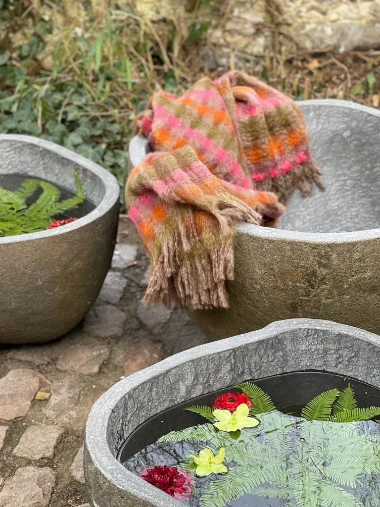
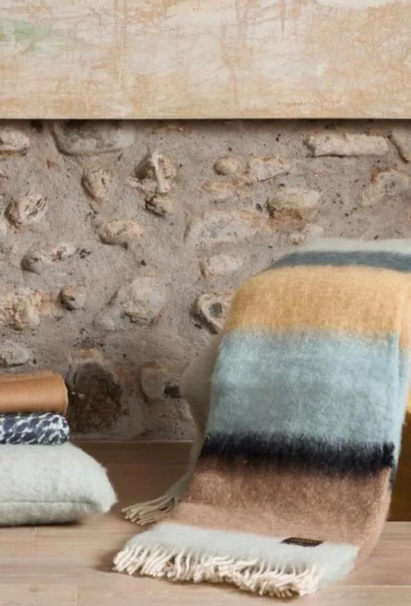
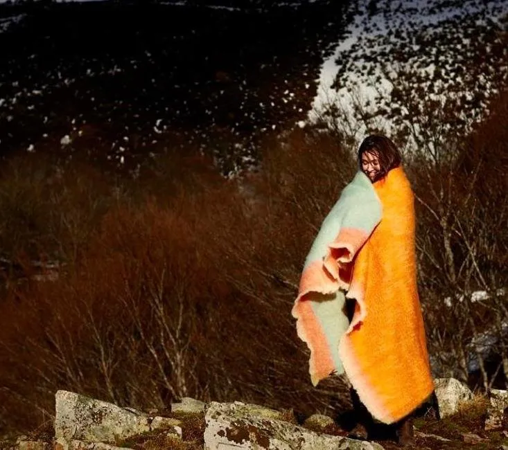
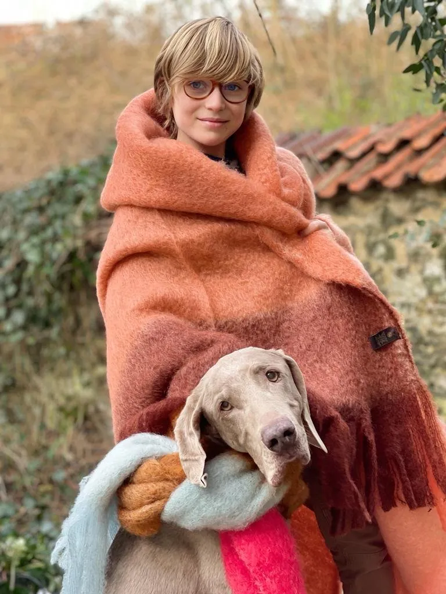